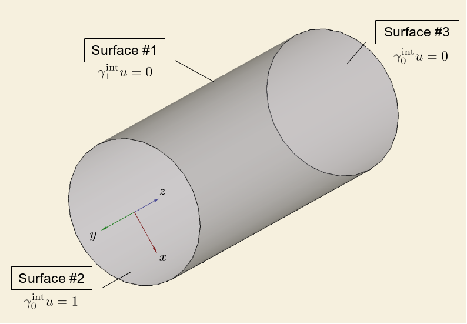
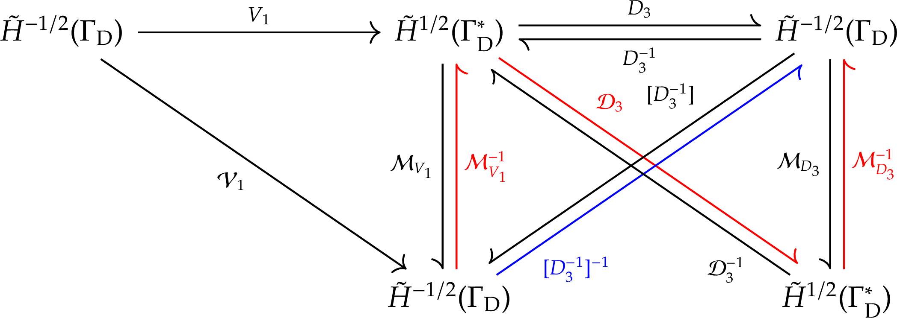
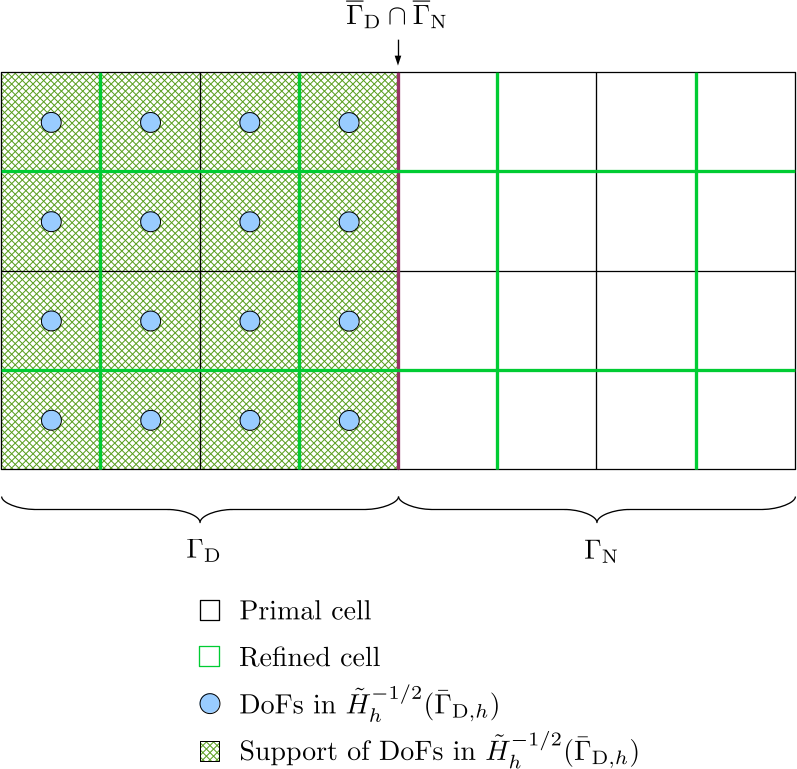
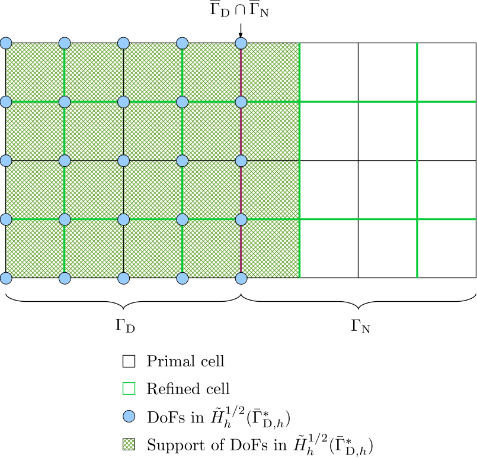
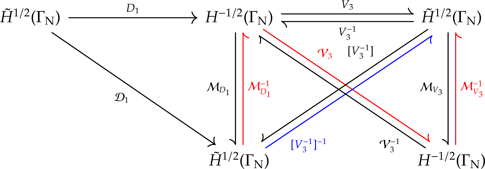
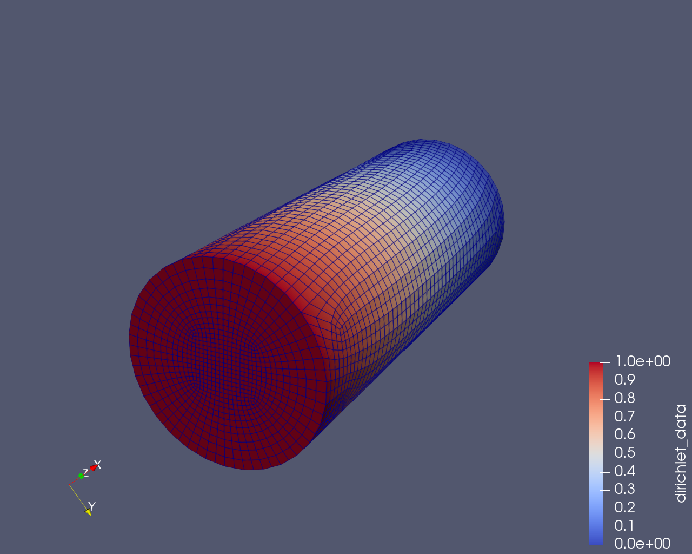
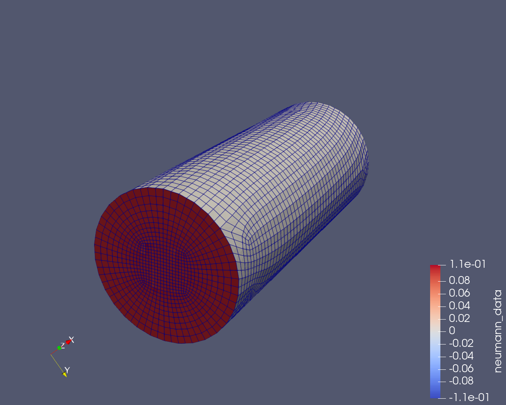

Solve the Laplace equation with mixed boundary conditions on a cylinder
Problem description
In this example, we demonstrate how to solve the Laplace equation with mixed boundary conditions using HierBEM. The Laplace equation is
\[\begin{equation} \begin{aligned} -\Delta u &= 0 \quad x\in\Omega, \\ \gamma_0^{\mathrm{int}} u &= g_{\mathrm{D}} \quad x\in\Gamma_{\mathrm{D}}, \\ \gamma_1^{\mathrm{int}} u &= g_{\mathrm{N}} \quad x\in\Gamma_{\mathrm{N}}, \end{aligned} \end{equation}\]where \(u\in H^1(\Omega)\), \(g_{\mathrm{D}}\in H^{1/2}(\Gamma_{\mathrm{D}})\) and \(g_{\mathrm{N}}\in H^{-1/2}(\Gamma_{\mathrm{N}})\).
As shown in the following figure, the problem domain is a cylinder. We assign a Dirichlet boundary condition \(\gamma_0^{\mathrm{int}} u = 1\) to the surface with the entity tag 2 and another Dirichlet boundary condition \(\gamma_0^{\mathrm{int}} u = 0\) to the surface with the entity tag 3. For the surface with the entity tag 1, we assign a homogeneous Neumann boundary condition \(\gamma_1^{\mathrm{int}} u = 0\).

Boundary integral equations and their discretization
In the example “Build an H-matrix on a subdomain”, we have obtained two boundary integral equations (BIEs) for the Laplace equation with mixed boundary conditions:
\[\begin{equation} \begin{aligned} (V \gamma_1^{\mathrm{int}}u)(x) &= \left[ (\sigma I + K) \gamma_0^{\mathrm{int}}u \right](x) \quad x\in\Gamma_{\mathrm{D}}, \\ (D \gamma_0^{\mathrm{int}}u)(x) &= \left\{ \left[ (1-\sigma)I - K' \right] \gamma_1^{\mathrm{int}}u \right\}(x) \quad x\in\Gamma_{\mathrm{N}}. \end{aligned} \label{eq:bies-for-mixed-bc} \end{equation}\]We have also extended the boundary conditions \(g_{\mathrm{D}}\) and \(g_{\mathrm{N}}\) to the whole boundary \(\Gamma\) as \(\tilde{g}_{\mathrm{D}}\) and \(\tilde{g}_{\mathrm{N}}\) respectively:
\[\begin{equation} \begin{aligned} \tilde{g}_{\mathrm{D}}\in H^{1/2}(\Gamma), \tilde{g}_{\mathrm{D}}(x) &= g_{\mathrm{D}}(x) \quad (x\in\Gamma_{\mathrm{D}}), \\ \tilde{g}_{\mathrm{N}}\in H^{-1/2}(\Gamma), \tilde{g}_{\mathrm{N}}(x) &= g_{\mathrm{N}}(x) \quad (x\in\Gamma_{\mathrm{N}}). \end{aligned} \end{equation}\]In HierBEM, we simply extend \(g_{\mathrm{D}}\) and \(g_{\mathrm{N}}\) with zeros. Then \(\tilde{g}_{\mathrm{D}}\in \tilde{H}^{1/2}(\Gamma_{\mathrm{D}}^{\ast})\) and \(\tilde{g}_{\mathrm{N}}\in \tilde{H}^{-1/2}(\Gamma_{\mathrm{N}})\).
After splitting the interior Dirichlet trace \(\gamma_0^{\mathrm{int}}u\) and the conormal trace \(\gamma_1^{\mathrm{int}}u\) as
\[\begin{equation} \gamma_0^{\mathrm{int}}u = \tilde{u} + \tilde{g}_{\mathrm{D}}, \gamma_1^{\mathrm{int}}u = \tilde{t} + \tilde{g}_{\mathrm{N}}, \end{equation}\]the BIEs become
\[\begin{equation} \begin{pmatrix} V_1 & -K_1 \\ K_1' & D_1 \end{pmatrix} \begin{pmatrix} \tilde{t} \\ \tilde{u} \end{pmatrix} = \begin{pmatrix} \sigma I_1 + K_2 & -V_2 \\ -D_2 & (1-\sigma) I_2 - K_2' \end{pmatrix} \begin{pmatrix} \tilde{g}_{\mathrm{D}} \\ \tilde{g}_{\mathrm{N}} \end{pmatrix}, \label{eq:bies-in-matrix-form} \end{equation}\]where \(\tilde{u}\in \tilde{H}^{1/2}(\Gamma_{\mathrm{N}})\) and \(\tilde{t}\in\tilde{H}^{-1/2}(\Gamma_{\mathrm{D}})\).
Testing the first BIE in Equation \eqref{eq:bies-in-matrix-form} with \(v\in\tilde{H}^{-1/2}(\Gamma_{\mathrm{D}})\) and the second BIE with \(q\in\tilde{H}^{1/2}(\Gamma_{\mathrm{N}})\) yields the variational formulation
\[\begin{equation} \begin{aligned} b_{V_1}(\tilde{t},v) - b_{K_1}(\tilde{u},v) &= b_{\sigma I_1+K_2}(\tilde{g}_{\mathrm{D}},v) - b_{V_2}(\tilde{g}_{\mathrm{N}},v), \\ b_{K_1'}(\tilde{t},q) + b_{D_1}(\tilde{u},q) &= -b_{D_2}(\tilde{g}_{\mathrm{D}},q) + b_{(1-\sigma)I_2-K_2'}(\tilde{g}_{\mathrm{N}},q). \end{aligned} \label{eq:variational-form} \end{equation}\]The function spaces of the boundary integral operators and bilinear forms are listed below.
\[\begin{equation} \begin{aligned} V_1 &: \tilde{H}^{-1/2}(\Gamma_{\mathrm{D}}) \rightarrow H^{1/2}(\Gamma_{\mathrm{D}}) \quad b_{V_1}: \tilde{H}^{-1/2}(\Gamma_{\mathrm{D}}) \times \tilde{H}^{-1/2}(\Gamma_{\mathrm{D}}) \rightarrow \mathbb{R} \\ K_1 &: \tilde{H}^{1/2}(\Gamma_{\mathrm{N}}) \rightarrow H^{1/2}(\Gamma_{\mathrm{D}}) \quad b_{K_1}: \tilde{H}^{1/2}(\Gamma_{\mathrm{N}}) \times \tilde{H}^{-1/2}(\Gamma_{\mathrm{D}}) \rightarrow \mathbb{R} \\ K_1' &: \tilde{H}^{-1/2}(\Gamma_{\mathrm{D}}) \rightarrow H^{-1/2}(\Gamma_{\mathrm{N}}) \quad b_{K_1'}: \tilde{H}^{-1/2}(\Gamma_{\mathrm{D}}) \times \tilde{H}^{1/2}(\Gamma_{\mathrm{N}}) \rightarrow \mathbb{R} \\ D_1 &: \tilde{H}^{1/2}(\Gamma_{\mathrm{N}}) \rightarrow H^{-1/2}(\Gamma_{\mathrm{N}}) \quad b_{D_1}: \tilde{H}^{1/2}(\Gamma_{\mathrm{N}}) \times \tilde{H}^{1/2}(\Gamma_{\mathrm{N}}) \rightarrow \mathbb{R} \\ I_1 &: \tilde{H}^{1/2}(\Gamma_{\mathrm{D}}^{\ast}) \rightarrow H^{1/2}(\Gamma_{\mathrm{D}}) \quad b_{I_1}: \tilde{H}^{1/2}(\Gamma_{\mathrm{D}}^{\ast}) \times \tilde{H}^{-1/2}(\Gamma_{\mathrm{D}}) \rightarrow \mathbb{R} \\ K_2 &: \tilde{H}^{1/2}(\Gamma_{\mathrm{D}}^{\ast}) \rightarrow H^{1/2}(\Gamma_{\mathrm{D}}) \quad b_{K_2}: \tilde{H}^{1/2}(\Gamma_{\mathrm{D}}^{\ast}) \times \tilde{H}^{-1/2}(\Gamma_{\mathrm{D}}) \rightarrow \mathbb{R} \\ V_2 &: \tilde{H}^{-1/2}(\Gamma_{\mathrm{N}}) \rightarrow H^{1/2}(\Gamma_{\mathrm{D}}) \quad b_{V_2}: \tilde{H}^{-1/2}(\Gamma_{\mathrm{N}}) \times \tilde{H}^{-1/2}(\Gamma_{\mathrm{D}}) \rightarrow \mathbb{R} \\ D_2 &: \tilde{H}^{1/2}(\Gamma_{\mathrm{D}}^{\ast}) \rightarrow H^{-1/2}(\Gamma_{\mathrm{N}}) \quad b_{D_2}: \tilde{H}^{1/2}(\Gamma_{\mathrm{D}}^{\ast}) \times \tilde{H}^{1/2}(\Gamma_{\mathrm{N}}) \rightarrow \mathbb{R} \\ I_2 &: \tilde{H}^{-1/2}(\Gamma_{\mathrm{N}}) \rightarrow H^{-1/2}(\Gamma_{\mathrm{N}}) \quad b_{I_2}: \tilde{H}^{-1/2}(\Gamma_{\mathrm{N}}) \times \tilde{H}^{1/2}(\Gamma_{\mathrm{N}}) \rightarrow \mathbb{R} \\ K_2' &: \tilde{H}^{-1/2}(\Gamma_{\mathrm{N}}) \rightarrow H^{-1/2}(\Gamma_{\mathrm{N}}) \quad b_{K_2'}: \tilde{H}^{-1/2}(\Gamma_{\mathrm{N}}) \times \tilde{H}^{1/2}(\Gamma_{\mathrm{N}}) \rightarrow \mathbb{R} \end{aligned} \end{equation}\]Using the piecewise linear finite element for \(H^{1/2}\) related spaces and the piecewise constant finite element for \(H^{-1/2}\) related spaces, the above variational formulation can be discretized as
\[\begin{equation} \begin{aligned} \begin{pmatrix} \mathcal{V}_1 & -\mathcal{K}_1 \\ \mathcal{K}_1^{\mathrm{T}} & \mathcal{D}_1 \end{pmatrix} \begin{pmatrix} [\tilde{t}] \\ [\tilde{u}] \end{pmatrix} = \begin{pmatrix} \sigma \mathcal{M}_1 + \mathcal{K}_2 & -\mathcal{V}_2 \\ -\mathcal{D}_2 & (1-\sigma) \mathcal{M}_2 - \mathcal{K}_2' \end{pmatrix} \begin{pmatrix} [\tilde{g}_{\mathrm{D}}] \\ [\tilde{g}_{\mathrm{N}}] \end{pmatrix}, \end{aligned} \label{eq:matrix-form} \end{equation}\]where \(\mathcal{K}_1'\) is replaced with \(\mathcal{K}_1^{\mathrm{T}}\), because \(K_1'\) is the adjoint operator of \(K_1\). The left hand side is a skew symmetric block matrix.
Solve the block matrix using Schur complement
We have obtained the matrix form of the boundary integral equation in \eqref{eq:matrix-form} for the Laplace PDE with mixed boundary conditions. This is a \(2\times 2\) block matrix system involving two variables \([\tilde{t}]\) and \([\tilde{u}]\). The Schur complement method is usually adopted to solve such a system of equations, which is equivalent to the Gauss-Seidel or Gauss elimination method for a \(2\times 2\) matrix. The advantage of the Schur complement method is that by decomposing the original large system matrix into two smaller problems, less memory is needed and the iterative solver converges faster.
Let a general \(2\times 2\) block matrix system be given as
\[\begin{equation} \begin{pmatrix} M_{11} & M_{12} \\ M_{21} & M_{22} \end{pmatrix} \begin{pmatrix} u \\ w \end{pmatrix} = \begin{pmatrix} f_1 \\ f_2 \end{pmatrix}. \end{equation}\]The Schur complement method comprises the following steps.
-
Multiply the equation in the first row with \(-M_{21}M_{11}^{-1}\) and add the result to the second row:
\[\begin{equation} \begin{pmatrix} M_{11} & M_{12} \\ 0 & M_{22} - M_{21}M_{11}^{-1}M_{12} \end{pmatrix} \begin{pmatrix} u \\ w \end{pmatrix} = \begin{pmatrix} f_1 \\ f_2 - M_{21}M_{11}^{-1}f_1 \end{pmatrix}. \end{equation}\]Here, \(M_{22} - M_{21}M_{11}^{-1}M_{12}\) is called the Schur complement of \(M\) with respect to the matrix block \(M_{11}\).
-
Solve the equation in the second row for \(w\).
\[\begin{equation} \left( M_{22} - M_{21}M_{11}^{-1}M_{12} \right) w = f_2 - M_{21}M_{11}^{-1} f_1. \end{equation}\] -
Substitute \(w\) into the equation in the first row and solve the following equation for \(u\).
\[\begin{equation} \label{eq:2} M_{11} u = f_1 - M_{12}w. \end{equation}\]
Construct operator preconditioners on subdomains
With the Schur complement method applied to Equation \eqref{eq:matrix-form}, we need to solve the following two equations:
\[\begin{equation} (\mathcal{D}_1 + \mathcal{K}_1^{\mathrm{T}} \mathcal{V}_1^{-1} \mathcal{K}_1) [\tilde{u}] = f_2 - \mathcal{K}_1^{\mathrm{T}} \mathcal{V}_1^{-1} f_1, \label{eq:schur-first} \end{equation}\] \[\begin{equation} \mathcal{V}_1 [\tilde{t}] = f_1 + \mathcal{K}_1 [\tilde{u}], \label{eq:schur-second} \end{equation}\]where
\[\begin{equation} \begin{aligned} f_1 &= (\sigma \mathcal{M}_1 + \mathcal{K}_2) [\tilde{g}_{\mathrm{D}}] - \mathcal{V}_2 [\tilde{g}_{\mathrm{N}}], \\ f_2 &= -\mathcal{D}_2[\tilde{g}_{\mathrm{D}}] + \left[ (1-\sigma) \mathcal{M}_2 - \mathcal{K}_2' \right] [\tilde{g}_{\mathrm{N}}]. \end{aligned} \end{equation}\]When Equation \eqref{eq:schur-first} is solved using an iteration solver such as CG, matrix/vector multiplication should be implemented for \(\mathcal{D}_1 + \mathcal{K}_1^{\mathrm{T}} \mathcal{V}_1^{-1} \mathcal{K}_1\). Let \(x\) be its input vector and \(y\) be the corresponding output vector. To compute \((\mathcal{D}_1 + \mathcal{K}_1^{\mathrm{T}} \mathcal{V}_1^{-1} \mathcal{K}_1) x\), we need to successively compute
\[\begin{equation} \begin{aligned} z_1 &= \mathcal{K}_1 x, \\ z_2 &= \mathcal{V}_1^{-1} z_1, \\ z_3 &= \mathcal{K}_1^{\mathrm{T}} z_2, \\ y &= \mathcal{D}_1 x + z_3. \end{aligned} \end{equation}\]To compute the above \(z_2\), it is equivalent to solve
\[\begin{equation} \mathcal{V}_1 z_2 = z_1. \end{equation}\]Meanwhile, during the evaluation of the right hand side vector of Equation \eqref{eq:schur-first}, \(\mathcal{V}_1^{-1} f_1\) should be computed by solving the equation
\[\begin{equation} \mathcal{V}_1 z_4 = f_1. \end{equation}\]In addition, Equation \eqref{eq:schur-second} also contains the matrix \(\mathcal{V}_1\). In all these three cases, \(\mathcal{V}_1\) will be solved. If the operator preconditioning method is used, the boundary integral operator \(V_1: \tilde{H}^{-1/2}(\Gamma_{\mathrm{D}}) \rightarrow H^{1/2}(\Gamma_{\mathrm{D}})\) should be preconditioned by the operator \(D: H^{1/2}(\Gamma_{\mathrm{D}}) \rightarrow \tilde{H}^{-1/2}(\Gamma_{\mathrm{D}})\). Because \(D\) as a preconditioner here has different domain and range spaces from \(D_1\) and \(D_2\) in Equation \eqref{eq:bies-in-matrix-form}, we write it as \(D_3\). Compared to the preconditioner \(D\) used for the Dirichlet problem, \(D_3\) is built on the subdomain \(\Gamma_{\mathrm{D}}\) instead of the whole boundary \(\Gamma\). When the hypersingular boundary integral operator \(D\) is defined on a subdomain, it is elliptic and does not need stabilization.
Also note that in the implementation of HierBEM, the domain space of \(D_3\) is enlarged from \(H^{1/2}(\Gamma_{\mathrm{D}})\) to \(\tilde{H}^{1/2}(\Gamma_{\mathrm{D}}^{\ast})\), which includes DoFs at the interface between \(\Gamma_{\mathrm{D}}\) and \(\Gamma_{\mathrm{N}}\) as well as the part of their support sets lying within \(\Gamma_{\mathrm{N}}\). If this part of the support sets is not included, which is the situation for \(H^{1/2}(\Gamma_{\mathrm{D}})\), the iterative solver does not converge for the preconditioned system. An illustration of the DoFs in the finite dimensional space \(\tilde{H}_h^{1/2}(\Gamma_{\mathrm{D}}^{\ast})\) and their support sets is given below, which has already been explained in the previous example. Obviously, when the mesh size \(h \rightarrow 0\), \(\tilde{H}_h^{1/2}(\Gamma_{\mathrm{D}}^{\ast}) \rightarrow H^{1/2}(\Gamma_{\mathrm{D}})\).
 $$ and their support sets.")
The commutative diagram for discretizing the preconditioner \(D_3\) is given below.

Let \(\Gamma_{\mathrm{D},h}\) be the primal mesh on the original subdomain \(\Gamma_{\mathrm{D}}\), \(\bar{\Gamma}_{\mathrm{D},h}\) be its refined mesh and \(\hat{\Gamma}_{\mathrm{D},h}\) be its dual mesh. Let \(\Gamma_{\mathrm{D},h}^{\ast}\) be the primal mesh of the extended subdomain \(\Gamma_{\mathrm{D}}^{\ast}\), \(\bar{\Gamma}_{\mathrm{D}}^{\ast}\) be its refined mesh and \(\hat{\Gamma}_{\mathrm{D}}^{\ast}\) be its dual mesh. With the averaging matrix \(C_d: \tilde{H}_h^{1/2}(\bar{\Gamma}_{\mathrm{D},h}^{\ast}) \rightarrow \tilde{H}_h^{1/2}(\hat{\Gamma}_{\mathrm{D},h}^{\ast})\), coupling matrix \(C_p: \tilde{H}_h^{-1/2}(\bar{\Gamma}_{\mathrm{D},h}) \rightarrow \tilde{H}_h^{-1/2}(\Gamma_{\mathrm{D},h})\), mass matrix \(\mathcal{M}_{D_3}(\bar{\Gamma}_{\mathrm{D},h}, \bar{\Gamma}_{\mathrm{D},h}^{\ast}): \tilde{H}_h^{-1/2}(\bar{\Gamma}_{\mathrm{D},h}) \rightarrow \tilde{H}_h^{1/2}(\bar{\Gamma}_{\mathrm{D},h}^{\ast})\) and Galerkin matrix of the preconditioner \(\mathcal{D}_3(\bar{\Gamma}_{\mathrm{D},h}^{\ast}): \tilde{H}_h^{1/2}(\bar{\Gamma}_{\mathrm{D},h}^{\ast}) \rightarrow \tilde{H}_h^{1/2}(\bar{\Gamma}_{\mathrm{D},h}^{\ast})\), the inverse of the precondition matrix is
\[\begin{equation} \begin{split} [D_3^{-1}]^{-1} = \left( C_d \mathcal{M}_{D_3}(\bar{\Gamma}_{\mathrm{D},h}, \bar{\Gamma}_{\mathrm{D},h}^{\ast}) C_p^{\mathrm{T}} \right)^{-1} \cdot \left( C_d \mathcal{D}_3(\bar{\Gamma}_{\mathrm{D},h}^{\ast}) C_d^{\mathrm{T}} \right) \cdot \\ \left( C_d \mathcal{M}_{D_3}(\bar{\Gamma}_{\mathrm{D},h}, \bar{\Gamma}_{\mathrm{D},h}^{\ast}) C_p^{\mathrm{T}} \right)^{-\mathrm{T}}. \end{split} \end{equation}\]N.B. The basis functions in the domain space of \(\mathcal{M}_{D_3}(\bar{\Gamma}_{\mathrm{D},h}, \bar{\Gamma}_{\mathrm{D},h}^{\ast})\) do not overlap with basis functions in its range space in the one layer of cells in \(\bar{\Gamma}_{\mathrm{D},h}^{\ast}\) which extends into \(\Gamma_{\mathrm{N}}\). Therefore, when we assemble \(\mathcal{M}_{D_3}(\bar{\Gamma}_{\mathrm{D},h}, \bar{\Gamma}_{\mathrm{D},h}^{\ast})\), we only consider cells in \(\bar{\Gamma}_{\mathrm{D},h}\). The DoFs and their support sets in the domain and range spaces of \(\mathcal{M}_{D_3}(\bar{\Gamma}_{\mathrm{D},h}, \bar{\Gamma}_{\mathrm{D},h}^{\ast})\) are shown in the following two figures.


In Equation \eqref{eq:schur-first}, \(\mathcal{D}_1\) plays a dominating role in \(\mathcal{D}_1 + \mathcal{K}_1^{\mathrm{T}} \mathcal{V}_1^{-1} \mathcal{K}_1\), therefore we can use the operator preconditioner of \(D_1\), i.e. \(V: H^{-1/2}(\Gamma_{\mathrm{N}}) \rightarrow \tilde{H}^{1/2}(\Gamma_{\mathrm{N}})\), to precondition this equation. To differentiate this preconditioner \(V\) from \(V_1\) and \(V_2\) in Equation \eqref{eq:bies-in-matrix-form}, we write it as \(V_3\). Compared to the preconditioner \(V\) used for the Neumann problem, \(V_3\) is constructed on the subdomain \(\Gamma_{\mathrm{N}}\).
The commutative diagram for discretizing the preconditioner \(V_3\) is shown below.

Let \(\Gamma_{\mathrm{N},h}\) be the primal mesh on the subdomain \(\Gamma_{\mathrm{N}}\), \(\bar{\Gamma}_{\mathrm{N},h}\) be its refined mesh and \(\hat{\Gamma}_{\mathrm{N},h}\) be its dual mesh. With the averaging matrix \(C_d: H_h^{-1/2}(\bar{\Gamma}_{\mathrm{N},h}) \rightarrow H_h^{-1/2}(\hat{\Gamma}_{\mathrm{N},h})\), coupling matrix \(C_p: \tilde{H}_h^{1/2}(\bar{\Gamma}_{\mathrm{N},h}) \rightarrow \tilde{H}_h^{1/2}(\Gamma_{\mathrm{N},h})\), mass matrix \(\mathcal{M}_{V_3}(\bar{\Gamma}_{\mathrm{N},h})\) and Galerkin matrix of the preconditioner \(\mathcal{V}_3(\bar{\Gamma}_{\mathrm{N},h}): H_h^{-1/2}(\bar{\Gamma}_{\mathrm{N},h}) \rightarrow H_h^{-1/2}(\bar{\Gamma}_{\mathrm{N},h})\), the inverse of the precondition matrix is
\[\begin{equation} \begin{split} [V_3^{-1}]^{-1} = \left( C_d \mathcal{M}_{V_3}(\bar{\Gamma}_{\mathrm{N},h}) C_p^{\mathrm{T}} \right)^{-1} \cdot \left( C_d \mathcal{V}_3(\bar{\Gamma}_{\mathrm{N},h}) C_d^{\mathrm{T}} \right) \cdot \\ \left( C_d \mathcal{M}_{V_3}(\bar{\Gamma}_{\mathrm{N},h}) C_p^{\mathrm{T}} \right)^{-\mathrm{T}}. \end{split} \end{equation}\]Source code explanation
In the main function in hierbem/examples/laplace-mixed/solve-laplace-mixed.cu, we first create a LaplaceBEM object with the problem type MixedBCProblem. Similar as before, we use operator preconditioning and serial iterative \(\mathcal{H}\)-matrix/vector multiplication.
const unsigned int dim = 2;
const unsigned int spacedim = 3;
LaplaceBEM<dim, spacedim, double, double>
bem(1, // fe order for dirichlet space
0, // fe order for neumann space
ProblemType::MixedBCProblem,
true, // is interior problem
32, // n_min for cluster tree
32, // n_min for block cluster tree
0.8, // eta for H-matrix
10, // max rank for H-matrix
0.01, // aca epsilon for H-matrix
1.0, // eta for preconditioner
5, // max rank for preconditioner
0.1, // aca epsilon for preconditioner
MultithreadInfo::n_threads() // Number of threads used for ACA
);
bem.set_project_name("solve-laplace-mixed");
bem.set_preconditioner_type(PreconditionerType::OperatorPreconditioning);
bem.set_iterative_solver_vmult_type(IterativeSolverVmultType::SerialIterative);
Next we read mesh and CAD files for the cylinder model.
std::ifstream mesh_in(HBEM_TEST_MODEL_DIR "cylinder.msh");
read_msh(mesh_in, bem.get_triangulation());
bem.get_subdomain_topology().generate_topology(HBEM_TEST_MODEL_DIR
"cylinder.brep",
HBEM_TEST_MODEL_DIR
"cylinder.msh");
bem.get_triangulation().refine_global(1);
We assign a cylindrical manifold and a second order mapping to surface #1 of the cylinder. For surface #2 and #3, we assign a flat manifold and a first order mapping.
FlatManifold<dim, spacedim> *flat_manifold = new FlatManifold<dim, spacedim>();
CylindricalManifold<dim, spacedim> *cyl_manifold =
new CylindricalManifold<dim, spacedim>(2);
bem.get_manifolds()[0] = flat_manifold;
bem.get_manifolds()[1] = cyl_manifold;
bem.get_manifold_description()[1] = 1;
bem.get_manifold_description()[2] = 0;
bem.get_manifold_description()[3] = 0;
bem.get_manifold_id_to_mapping_order()[0] = 1;
bem.get_manifold_id_to_mapping_order()[1] = 2;
Then we assign the Dirichlet boundary condition and Neumann boundary condition.
Functions::ConstantFunction<spacedim> f1(1.0);
Functions::ConstantFunction<spacedim> f2(0.0);
bem.assign_neumann_bc(f2, 1);
bem.assign_dirichlet_bc(f1, 2);
bem.assign_dirichlet_bc(f2, 3);
During bem.run(), the following stages are performed, which are defined in the header file hierbem/include/laplace/laplace_bem.priv.hcu.
-
setup_system: Four function spaces as well as their cluster trees are created:dirichlet_space_on_dirichlet_domain_for \(\tilde{H}_h^{1/2}(\Gamma_{\mathrm{D}}^{\ast})\),dirichlet_space_on_neumann_domain_for \(\tilde{H}_h^{1/2}(\Gamma_{\mathrm{N}})\),neumann_space_on_dirichlet_domain_for \(\tilde{H}_h^{-1/2}(\Gamma_{\mathrm{D}})\) andneumann_space_on_neumann_domain_for \(\tilde{H}_h^{-1/2}(\Gamma_{\mathrm{N}})\).dirichlet_space_on_dirichlet_domain_ = std::make_unique< BEMFunctionSpace<dim, spacedim, SearchableMaterialIdContainer, real_type>>( dof_handler_for_dirichlet_space_, n_min_for_ct_, dirichlet_bc_definition_, true, false); dirichlet_space_on_neumann_domain_ = std::make_unique< BEMFunctionSpace<dim, spacedim, SearchableMaterialIdContainer, real_type>>( dof_handler_for_dirichlet_space_, n_min_for_ct_, neumann_bc_definition_, false, false); neumann_space_on_dirichlet_domain_ = std::make_unique< BEMFunctionSpace<dim, spacedim, SearchableMaterialIdContainer, real_type>>( dof_handler_for_neumann_space_, n_min_for_ct_, dirichlet_bc_definition_, true, false); neumann_space_on_neumann_domain_ = std::make_unique< BEMFunctionSpace<dim, spacedim, SearchableMaterialIdContainer, real_type>>( dof_handler_for_neumann_space_, n_min_for_ct_, neumann_bc_definition_, true, false);Create bilinear forms \(b_{V_1}\), \(b_{K_1}\), \(b_{D_1}\), \(b_{\sigma I_1 + K_2}\), \(b_{V_2}\), \(b_{D_2}\) and \(b_{(1-\sigma) I_2 - K_2'}\).
bV1_ = std::make_unique<BEMBilinearForm<dim, spacedim, SearchableMaterialIdContainer, SingleLayerKernel, RangeNumberType, KernelNumberType>>( *neumann_space_on_dirichlet_domain_, *neumann_space_on_dirichlet_domain_); bK1_ = std::make_unique<BEMBilinearForm<dim, spacedim, SearchableMaterialIdContainer, DoubleLayerKernel, RangeNumberType, KernelNumberType>>( *dirichlet_space_on_neumann_domain_, *neumann_space_on_dirichlet_domain_); bD1_ = std::make_unique<BEMBilinearForm<dim, spacedim, SearchableMaterialIdContainer, HyperSingularKernelRegular, RangeNumberType, KernelNumberType>>( *dirichlet_space_on_neumann_domain_, *dirichlet_space_on_neumann_domain_); bI1K2_ = std::make_unique<BEMBilinearForm<dim, spacedim, SearchableMaterialIdContainer, DoubleLayerKernel, RangeNumberType, KernelNumberType>>( *dirichlet_space_on_dirichlet_domain_, *neumann_space_on_dirichlet_domain_); bV2_ = std::make_unique<BEMBilinearForm<dim, spacedim, SearchableMaterialIdContainer, SingleLayerKernel, RangeNumberType, KernelNumberType>>( *neumann_space_on_neumann_domain_, *neumann_space_on_dirichlet_domain_); bD2_ = std::make_unique<BEMBilinearForm<dim, spacedim, SearchableMaterialIdContainer, HyperSingularKernelRegular, RangeNumberType, KernelNumberType>>( *dirichlet_space_on_dirichlet_domain_, *dirichlet_space_on_neumann_domain_); bI2K_prime2_ = std::make_unique<BEMBilinearForm<dim, spacedim, SearchableMaterialIdContainer, AdjointDoubleLayerKernel, RangeNumberType, KernelNumberType>>( *neumann_space_on_neumann_domain_, *dirichlet_space_on_neumann_domain_);Then create corresponding block cluster trees.
bV1_->build_block_cluster_tree(eta_, n_min_for_bct_); bK1_->build_block_cluster_tree(eta_, n_min_for_bct_); bD1_->build_block_cluster_tree(eta_, n_min_for_bct_); bI1K2_->build_block_cluster_tree(eta_, n_min_for_bct_); bV2_->build_block_cluster_tree(eta_, n_min_for_bct_); bD2_->build_block_cluster_tree(eta_, n_min_for_bct_); bI2K_prime2_->build_block_cluster_tree(eta_, n_min_for_bct_);The Dirichlet and Neumann boundary conditions are interpolated on corresponding subdomains.
interpolate_dirichlet_bc(); dirichlet_bc_on_selected_dofs_.reinit( n_dofs_for_dirichlet_space_on_dirichlet_domain); dirichlet_space_on_dirichlet_domain_ ->extract_selected_dofs(dirichlet_bc_, dirichlet_bc_on_selected_dofs_); dirichlet_bc_internal_dof_numbering_.reinit( n_dofs_for_dirichlet_space_on_dirichlet_domain); dirichlet_space_on_dirichlet_domain_->convert_vector_e2i( dirichlet_bc_on_selected_dofs_, dirichlet_bc_internal_dof_numbering_); interpolate_neumann_bc(); neumann_bc_on_selected_dofs_.reinit(n_dofs_for_neumann_space_on_neumann_domain); neumann_space_on_neumann_domain_ ->extract_selected_dofs(neumann_bc_, neumann_bc_on_selected_dofs_); neumann_bc_internal_dof_numbering_.reinit( n_dofs_for_neumann_space_on_neumann_domain); neumann_space_on_neumann_domain_->convert_vector_e2i( neumann_bc_on_selected_dofs_, neumann_bc_internal_dof_numbering_);Allocate memory for right hand side vectors. Because the linear system is a \(2\times 2\) block matrix, there are two right hand side vectors
system_rhs_on_dirichlet_domain_andsystem_rhs_on_neumann_domain_.system_rhs_on_dirichlet_domain_.reinit( n_dofs_for_neumann_space_on_dirichlet_domain); system_rhs_on_neumann_domain_.reinit( n_dofs_for_dirichlet_space_on_neumann_domain);Allocate memory for solution vectors.
dirichlet_data_is the vector holding all Dirichlet data on \(\Gamma\) andneumann_data_holds the Neumann data. Both of them adopt the original DoF numbering provided by corresponding DoF handlers.dirichlet_data_on_neumann_domain_is \([\tilde{u}]\) andneumann_data_on_dirichlet_domain_is \([\tilde{t}]\). They hold DoFs in subdomains, which are selected from the complete DoFs in their DoF handlers. Therefore,dirichlet_data_on_neumann_domain_andneumann_data_on_dirichlet_domain_adopt the local external DoF numbering. Meanwhile,dirichlet_data_on_neumann_domain_internal_dof_numbering_andneumann_data_on_dirichlet_domain_internal_dof_numbering_are associated vectors with the local internal DoF numbering. Finally,solution_on_combined_domain_internal_dof_numbering_is a concatenation ofdirichlet_data_on_neumann_domain_internal_dof_numbering_andneumann_data_on_dirichlet_domain_internal_dof_numbering_.dirichlet_data_.reinit(dof_handler_for_dirichlet_space_.n_dofs()); neumann_data_.reinit(dof_handler_for_neumann_space_.n_dofs()); dirichlet_data_on_neumann_domain_.reinit( n_dofs_for_dirichlet_space_on_neumann_domain); neumann_data_on_dirichlet_domain_.reinit( n_dofs_for_neumann_space_on_dirichlet_domain); dirichlet_data_on_neumann_domain_internal_dof_numbering_.reinit( n_dofs_for_dirichlet_space_on_neumann_domain); neumann_data_on_dirichlet_domain_internal_dof_numbering_.reinit( n_dofs_for_neumann_space_on_dirichlet_domain); solution_on_combined_domain_internal_dof_numbering_.reinit( n_dofs_for_neumann_space_on_dirichlet_domain + n_dofs_for_dirichlet_space_on_neumann_domain); -
assemble_hmatrix_system: We first assemble \(\mathcal{H}\)-matrices on the right hand side of the equation, namely \(\sigma \mathcal{M}_1 + \mathcal{K}_2\), \(-\mathcal{V}_2\), \(-\mathcal{D}_2\) and \((1-\sigma) \mathcal{M}_2 - \mathcal{K}_2'\).I1K2_hmat_ = bI1K2_->build_hmatrix_with_mass_matrix(thread_num_, max_hmat_rank_, aca_relative_error_, CUDAKernelNumberType(1.0), real_type(0.5), SauterQuadratureRule<dim>(5, 4, 4, 3), QGauss<dim>( fe_order_for_dirichlet_space_ + 1), mappings_, material_id_to_mapping_index_, subdomain_topology_); I2K_prime2_hmat_ = bI2K_prime2_->build_hmatrix_with_mass_matrix( thread_num_, max_hmat_rank_, aca_relative_error_, CUDAKernelNumberType(-1.0), real_type(0.5), SauterQuadratureRule<dim>(5, 4, 4, 3), QGauss<dim>(fe_order_for_dirichlet_space_ + 1), mappings_, material_id_to_mapping_index_, subdomain_topology_); V2_hmat_ = bV2_->build_hmatrix(thread_num_, max_hmat_rank_, aca_relative_error_, CUDAKernelNumberType(-1.0), SauterQuadratureRule<dim>(5, 4, 4, 3), mappings_, material_id_to_mapping_index_, subdomain_topology_); D2_hmat_ = bD2_->build_hmatrix(thread_num_, max_hmat_rank_, aca_relative_error_, CUDAKernelNumberType(-1.0), SauterQuadratureRule<dim>(5, 4, 4, 3), mappings_, material_id_to_mapping_index_, subdomain_topology_);These \(\mathcal{H}\)-matrices are used to compute right hand side vectors as below.
I1K2_hmat_->vmult(system_rhs_on_dirichlet_domain_, dirichlet_bc_internal_dof_numbering_); V2_hmat_->vmult_add(system_rhs_on_dirichlet_domain_, neumann_bc_internal_dof_numbering_); D2_hmat_->vmult(system_rhs_on_neumann_domain_, dirichlet_bc_internal_dof_numbering_); I2K_prime2_hmat_->vmult_add(system_rhs_on_neumann_domain_, neumann_bc_internal_dof_numbering_);Once right hand side vectors are built, the above \(\mathcal{H}\)-matrices are released.
I1K2_hmat_->release(); I2K_prime2_hmat_->release(); V2_hmat_->release(); D2_hmat_->release();Then we assemble \(\mathcal{H}\)-matrices on the left hand side of the equation, namely \(\mathcal{V}_1\), \(-\mathcal{K}_1\) and \(\mathcal{D}_1\).
V1_hmat_ = bV1_->build_hmatrix(thread_num_, max_hmat_rank_, aca_relative_error_, CUDAKernelNumberType(1.0), SauterQuadratureRule<dim>(5, 4, 4, 3), mappings_, material_id_to_mapping_index_, subdomain_topology_); K1_hmat_ = bK1_->build_hmatrix(thread_num_, max_hmat_rank_, aca_relative_error_, CUDAKernelNumberType(-1.0), SauterQuadratureRule<dim>(5, 4, 4, 3), mappings_, material_id_to_mapping_index_, subdomain_topology_); D1_hmat_ = bD1_->build_hmatrix(thread_num_, max_hmat_rank_, aca_relative_error_, CUDAKernelNumberType(1.0), SauterQuadratureRule<dim>(5, 4, 4, 3), mappings_, material_id_to_mapping_index_, subdomain_topology_);These \(\mathcal{H}\)-matrices on the left hand side are wrapped into a skew symmetric block matrix.
M_hmat_ = HBlockMatrixSkewSymm<spacedim, RangeNumberType>(V1_hmat_.get(), K1_hmat_.get(), D1_hmat_.get()); -
assemble_hmatrix_preconditioner: To build operator preconditioners, we generate a two-level multigrid as before.mg_tria_for_preconditioner_.copy_triangulation(tria_); mg_tria_for_preconditioner_.refine_global();Then we extract material indices for \(\Gamma_{\mathrm{D}}\) and \(\Gamma_{\mathrm{N}}\) into two sets, which will be used to specify the subdomains of the preconditioners.
std::set<types::material_id> dirichlet_domain_material_ids; for (const auto &bc : dirichlet_bc_definition_) { dirichlet_domain_material_ids.insert(bc.first); } std::set<types::material_id> neumann_domain_material_ids; for (const auto &bc : neumann_bc_definition_) { neumann_domain_material_ids.insert(bc.first); }The preconditioner \(D_3\) is encapsulated in the class
PreconditionerForLaplaceDirichletand the preconditioner \(V_3\) is encapsulated in the classPreconditionerForLaplaceNeumann. Here we create and set up these two preconditioner objects.operator_preconditioner_dirichlet_ = new PreconditionerForLaplaceDirichlet< dim, spacedim, RangeNumberType, KernelNumberType>( fe_for_neumann_space_, fe_for_dirichlet_space_, mg_tria_for_preconditioner_, neumann_space_on_dirichlet_domain_->get_internal_to_external_dof_numbering(), neumann_space_on_dirichlet_domain_->get_external_to_internal_dof_numbering(), dirichlet_domain_material_ids); operator_preconditioner_neumann_ = new PreconditionerForLaplaceNeumann< dim, spacedim, RangeNumberType, KernelNumberType>( fe_for_dirichlet_space_, fe_for_neumann_space_, mg_tria_for_preconditioner_, dirichlet_space_on_neumann_domain_->get_internal_to_external_dof_numbering(), dirichlet_space_on_neumann_domain_->get_external_to_internal_dof_numbering(), neumann_domain_material_ids); operator_preconditioner_dirichlet_->setup_preconditioner( thread_num_, HMatrixParameters(n_min_for_ct_, n_min_for_bct_, eta_, max_hmat_rank_, aca_relative_error_), subdomain_topology_, mappings_, material_id_to_mapping_index_, SurfaceNormalDetector<dim, spacedim>(subdomain_topology_), SauterQuadratureRule<dim>(5, 4, 4, 3), QGauss<2>(fe_for_dirichlet_space_.degree + 1)); operator_preconditioner_neumann_->setup_preconditioner( thread_num_, HMatrixParameters(n_min_for_ct_, n_min_for_bct_, eta_, max_hmat_rank_, aca_relative_error_), subdomain_topology_, mappings_, material_id_to_mapping_index_, SurfaceNormalDetector<dim, spacedim>(subdomain_topology_), SauterQuadratureRule<dim>(5, 4, 4, 3), QGauss<2>(fe_for_dirichlet_space_.degree + 1)); -
solve: First, we set the \(\mathcal{H}\)-matrix/vector multiplication strategy for the matrix blocks within the skew symmetric matrix. Matrix blockM11is \(\mathcal{V}_1\),M12is \(-\mathcal{K}_1\) andM22is \(\mathcal{D}_1\).M11andM22are symmetric positive definite matrices, which require bothvmultandTvmultmethods. Even thoughM12is not symmetric, because we need its transpose to represent the matrix block \(\mathcal{K}_1'\), bothvmultandTvmultmethods are needed.set_hmatrix_vmult_strategy_for_iterative_solver(M_hmat_.get_M11(), vmult_type_, true, true); set_hmatrix_vmult_strategy_for_iterative_solver(M_hmat_.get_M12(), vmult_type_, true, true); set_hmatrix_vmult_strategy_for_iterative_solver(M_hmat_.get_M22(), vmult_type_, true, true);Similarly, we set the \(\mathcal{H}\)-matrix/vector multiplication strategy for the two preconditioners.
set_hmatrix_vmult_strategy_for_iterative_solver( operator_preconditioner_dirichlet_->get_preconditioner_hmatrix(), vmult_type_, true, true); set_hmatrix_vmult_strategy_for_iterative_solver( operator_preconditioner_neumann_->get_preconditioner_hmatrix(), vmult_type_, true, true);Then we solve the block matrix system using the Schur complement method.
solve_hblockmatrix_skew_symm_using_schur_complement( M_hmat_, neumann_data_on_dirichlet_domain_internal_dof_numbering_, dirichlet_data_on_neumann_domain_internal_dof_numbering_, system_rhs_on_dirichlet_domain_, system_rhs_on_neumann_domain_, *operator_preconditioner_dirichlet_, *operator_preconditioner_neumann_, 1000, real_type(1e-8), true, true);After getting the two solution vectors
neumann_data_on_dirichlet_domain_internal_dof_numbering_anddirichlet_data_on_neumann_domain_internal_dof_numbering_in the local internal DoF numbering on subdomains \(\Gamma_{\mathrm{D}}\) and \(\Gamma_{\mathrm{N}}\) respectively, we need to convert them to external DoF numbering first, then combine them with corresponding boundary condition data, which form complete Dirichlet and Neumann data on the whole boundary \(\Gamma\).neumann_space_on_dirichlet_domain_->convert_vector_i2e( neumann_data_on_dirichlet_domain_internal_dof_numbering_, neumann_data_on_dirichlet_domain_); dirichlet_space_on_neumann_domain_->convert_vector_i2e( dirichlet_data_on_neumann_domain_internal_dof_numbering_, dirichlet_data_on_neumann_domain_); dirichlet_space_on_neumann_domain_->assemble_selected_dofs_into_full_dofs( dirichlet_data_on_neumann_domain_, dirichlet_data_); dirichlet_space_on_dirichlet_domain_->assemble_selected_dofs_into_full_dofs( dirichlet_bc_on_selected_dofs_, dirichlet_data_); neumann_space_on_dirichlet_domain_->assemble_selected_dofs_into_full_dofs( neumann_data_on_dirichlet_domain_, neumann_data_); neumann_space_on_neumann_domain_->assemble_selected_dofs_into_full_dofs( neumann_bc_on_selected_dofs_, neumann_data_); -
output_results: Add the complete Dirichlet and Neumann data vectors on the whole boundary \(\Gamma\) to theDataOutobject. Write the combined solution vectorsolution_on_combined_domain_internal_dof_numbering_(internal DoF numbering), complete Neumann dataneumann_data_(external DoF numbering) and complete Dirichlet datadirichlet_data_(external DoF numbering) to a text file.vtk_output.open(project_name_ + std::string(".vtk"), std::ofstream::out); data_out.add_data_vector(dof_handler_for_dirichlet_space_, dirichlet_data_, "dirichlet_data"); data_out.add_data_vector(dof_handler_for_neumann_space_, neumann_data_, "neumann_data"); data_out.build_patches(); data_out.write_vtk(vtk_output); constexpr unsigned int field_width = numbers::NumberTraits<RangeNumberType>::is_complex ? 35 : 25; print_vector_to_mat(data_file, "solution_on_combined_domain_internal_dof_numbering", solution_on_combined_domain_internal_dof_numbering_, false, 15, field_width); print_vector_to_mat(data_file, "neumann_data", neumann_data_, false, 15, field_width); print_vector_to_mat(data_file, "dirichlet_data", dirichlet_data_, false, 15, field_width);
Results
The following figure shows the potential distribution on the cylinder.

The following figure shows the interior conormal trace of the potential on the cylinder.
